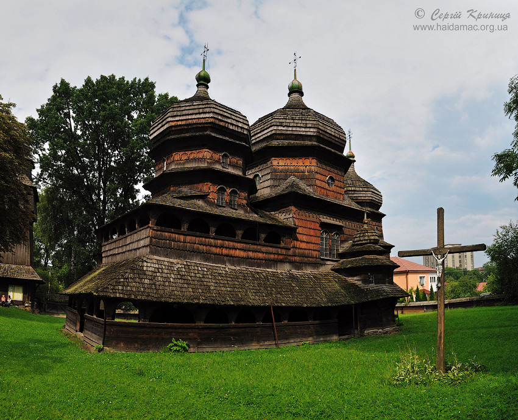

Знаходиться у м. Дрогобич (Львівська область). Була занесена у Світову Спадщину ЮНЕСКО 21 червня 2013 року. (картинка 1)
Знаходиться у м. Дрогобич (Львівська область). Була занесена у Світову Спадщину ЮНЕСКО 21 червня 2013 року. (картинка 1)
В путівниках найчастіше пишуть, що в 1656 році була перенесена в Дрогобич з карпатського села Надіїва. Церкву обміняли на сіль, розібрали та перевезли до Дрогобича на волах. Її встановили на місці попередньої церкви, яка згоріла. (картинка 2)
Інтер`єр церкви прикрашений стінописом, що виконаний під керівництвом Стефана Маляра. Крім релігійних композицій, багатий декоративний орнамент переважно рослинного характеру. (картинка 3)
Церкву декілька разів демонтували, але вона не втратила свого первісного вигляду.
